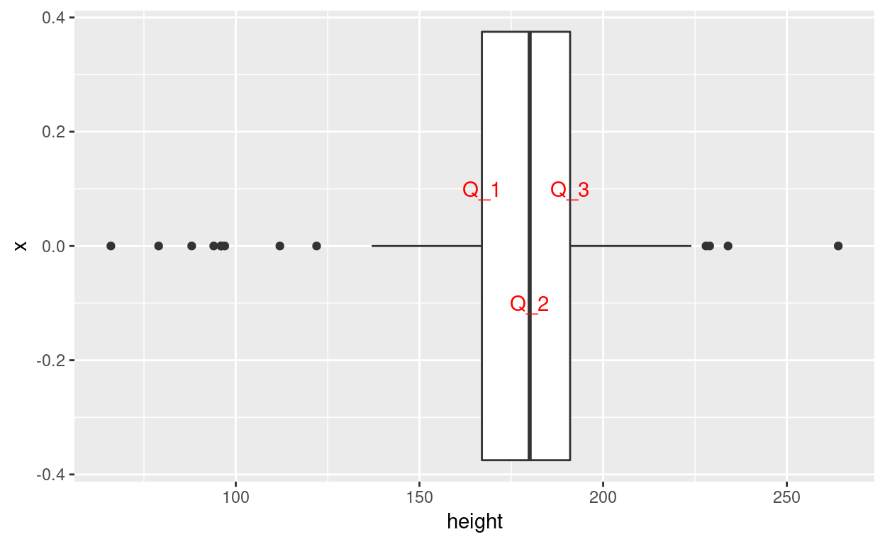
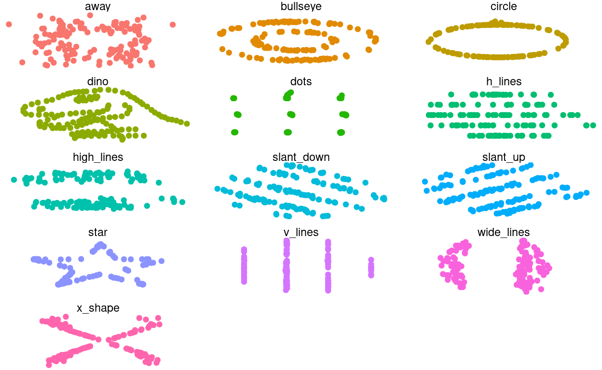

Na deze tutorial:
Een centrummaat is een getal dat “centraal” gelegen is in een verzameling getallen. Op die manier kan het beschouwd worden als een waarde die de verzameling als geheel vertegenwoordigt.
Een spreidingsmaat is een getal dat uitdrukt in hoeverre een verzameling getallen onderling verschilt. Hoe groter de waarde, hoe verder uit elkaar de getallen verspreid liggen.
Er bestaan verschillende centrum- en spreidingsmaten, en elk is geschikt voor variabelen van een specifiek meetniveau.
Bij kwalitatieve variabelen, vooral niet-numerieke gegevens, kan je niet meteen van centrum- en spreidingsmaten spreken zoals eerder gedefinieerd. Het is wel mogelijk om een waarde te definiëren die representatief is voor de variabele:
De modus is de vaakst voorkomende waarde in een kwalitatieve variabele.
In R is er niet meteen een functie voor het berekenen van de modus, maar je kan de modus wel makkelijk aflezen uit een frequentietabel. Bijvoorbeeld:
table(starwars$gender)##
## female hermaphrodite male none
## 19 1 62 2De modus voor de variabele starwars$gender is dus male.
Als er veel verschillende waarden zijn, dan is het aflezen van de modus iets moeilijker. Dan kan je de tabel eventueel sorteren:
homeworlds <- table(starwars$homeworld)
homeworlds[order(homeworlds, decreasing = TRUE)]##
## Naboo Tatooine Alderaan Coruscant Kamino
## 11 10 3 3 3
## Corellia Kashyyyk Mirial Ryloth Aleen Minor
## 2 2 2 2 1
## Bespin Bestine IV Cato Neimoidia Cerea Champala
## 1 1 1 1 1
## Chandrila Concord Dawn Dathomir Dorin Endor
## 1 1 1 1 1
## Eriadu Geonosis Glee Anselm Haruun Kal Iktotch
## 1 1 1 1 1
## Iridonia Kalee Malastare Mon Cala Muunilinst
## 1 1 1 1 1
## Nal Hutta Ojom Quermia Rodia Serenno
## 1 1 1 1 1
## Shili Skako Socorro Stewjon Sullust
## 1 1 1 1 1
## Toydaria Trandosha Troiken Tund Umbara
## 1 1 1 1 1
## Utapau Vulpter Zolan
## 1 1 1Naboo is hier dus de modus.
Als een variabele 2 verschillende waarden heeft die evenveel voorkomen, spreekt men van een bimodale variabele. Als er meerdere zijn van een multimodale variabele.
Voor quantitatieve variabelen, wordt als centrummaten vaak het gemiddelde gebruikt en als spreidingsmaat de standaardafwijking.
Het rekenkundig gemiddelde van een steekproef, \(\overline{x}\), is een centrummaat die gedefinieerd is als de som van alle waarden \(X = {x_1, ..., x_n}\), gedeeld door het aantal getallen:
\(\overline{x} = \frac{1}{n} \sum_{i = 1}^{n} x_i\)
Een voorbeeld:
x <- c(6, 13, 2, 2, 20, 17, 1, 16, 19, 8, 12, 16, 13, 13, 1, 5, 10, 5, 10, 12)
sample_mean <- sum(x) / length(x) # Formule toepassen
sample_mean## [1] 10.05mean(x) # Functie mean() gebruiken## [1] 10.05De variantie van een steekproef, \(s^2\), is een spreidingsmaat die gedefinieerd is als:
\(s^2 = \frac{1}{n-1} \sum_{i = 1}^{n}(x_i - \mu)^2\)
In R:
sample_variance <- sum((x - sample_mean)^2) / (length(x) - 1)
sample_variance## [1] 36.68158var(x)## [1] 36.68158De standaardafwijking van een steekproef, \(s\) is de vierkantswortel van de variantie: \(s = \sqrt{s^2}\)
sqrt(sample_variance)## [1] 6.056532sd(x)## [1] 6.056532Bereken zelf het gemiddelde en standaardafwijking van de variabele starwars$height. In de eerste lijn zijn de ontbrekende waarden in de tabel al uitgefilterd. Als je dit niet doet, zal de berekening niet lukken en krijg je NA als resultaat. De functie mean() kan ook ontbrekende waarden wegfilteren met de optie na.rm = TRUE, bv. mean(starwars$height, na.rm = TRUE).
Ter controle: het gemiddelde is (afgerond) 174.3580, de standaardafwijking 34.5551.
lengtes <- na.omit(starwars$height)
gemiddelde <-
standaardafwijking <-
gemiddelde
standaardafwijkinglengtes <- na.omit(starwars$height)
gemiddelde <- mean(lengtes)
standaardafwijking <- sqrt(sum((lengtes - gemiddelde)^2) / length(lengtes))Doe hetzelfde voor de variabele starwars$mass. Filter eerst de lege waarden er uit! Ter controle: het gemiddelde is (afgerond) 97.3119, de standaardafwijking 168.0149.
massas <-
gemiddelde_2 <-
standaardafwijking_2 <-
gemiddelde_2
standaardafwijking_2massas <- na.omit(starwars$mass)
gemiddelde_2 <- mean(mass)
standaardafwijking_2 <- sqrt(sum((massas - gemiddelde_2)^2) / length(massas))In de volgende oefening is de grootste waarde uit starwars$mass weggelaten. Bereken opnieuw gemiddelde en standaardafwijking.
massas <- na.omit(starwars$mass)
max_massa <- max(massas)
massas_zonder_max <- massas[-which(massas==max_massa)] # verwijder grootste waarde uit de lijst
gemiddelde_3 <-
standaardafwijking_3 <-
gemiddelde_3
standaardafwijking_3massas <- na.omit(starwars$mass)
max_massa <- max(massas)
massas_zonder_max <- massas[-which(massas==max_massa)]
gemiddelde_3 <- mean(massas_zonder_max)
standaardafwijking_3 <- sqrt(sum((massas_zonder_max - gemiddelde_3)^2) / length(massas_zonder_max))Wat valt je op als je de uitkomsten vergelijkt met de waarden van de gehele lijst? Kan je dit verklaren?
Om dit te begrijpen, kan het helpen om de data te visualiseren. Maak eens een boxplot van de variabele mass. Tip: die zal duidelijker zijn als je hem horizontaal tekent.
ggplot()ggplot(data = starwars, aes(y = mass)) +
geom_boxplot() +
coord_flip()Je zou in de laatste oefening gemerkt moeten hebben dat het weglaten van een extreme waarde een enorme invloed had op de waarde van het gemiddelde en de standaardafwijking. Het gemiddelde en standaardafwijking zijn erg gevoelig voor uitschieters in de data. Een alternatieve centrummaat die minder gevoelig is voor uitschieters is de mediaan.
Om de mediaan van een verzameling getallen te bepalen, sorteer je eerst alle getallen en neem je de middelste waarde. Als er een even aantal waarden is, neem je het gemiddelde van de twee middelste.
In R kan je de functie median() gebruiken:
x <- c(6, 13, 2, 2, 20, 17, 1, 16, 19, 8, 12, 16, 13, 13, 1, 5, 10, 5, 10, 12)
median(x)## [1] 11De spreidingsmaat geassocieerd met de mediaan is de interkwartielafstand. Eerst definiëren we wat een kwartiel is:
Een kwartiel is een van de drie getallen in de gesorteerde rij die de verzameling zo goed mogelijk verdeelt in vier even grote delen. Men spreekt (van klein naar groot) van het eerste, tweede en derde kwartiel en noteert \(Q_1\), \(Q_2\) en \(Q_3\).
Merk op dat \(Q_2\) overeenkomt met de mediaan!
De Interkwartielafstand is het verschil tussen het derde en eerste kwartiel, \(Q_3 - Q_1\)
In R bereken je de interkwartielafstand met de functie IQR() (afkorting van InterQuartile Range):
IQR(x)## [1] 8.75Tussen het eerste en derde kwartiel ligt de helft van alle datapunten.
Een boxplot is een visuele weergave van de mediaan en de kwartielen:
quartiles <- quantile(starwars$height, c(0.25, 0.5, 0.75), na.rm = TRUE)
ggplot(data = starwars, mapping = aes(y = height)) +
geom_boxplot() +
coord_flip() +
annotate(geom = "text", x = 0.1, y = quartiles[1], label = "Q_1", col = "red") +
annotate(geom = "text", x = -0.1, y = quartiles[2], label = "Q_2", col = "red") +
annotate(geom = "text", x = 0.1, y = quartiles[3], label = "Q_3", col = "red")## Warning: Removed 6 rows containing non-finite values (stat_boxplot).
Het concept van kwartielen kan je veralgemenen tot zgn. percentielen.
Het n-de percentiel (of percentiel n) is een getal in een van klein naar groot gesorteerde rij getallen waarbij \(n\) percent van de waarden links ligt.
In R kan je de functie quantile() gebruiken. Je geeft als argumenten de lijst getallen mee en een lijst met de percentielen die je wil berekenen, uitgedrukt als een fractie van 1. Bijvoorbeeld:
quantile(starwars$height,
c(0, 0.25, 0.5, 0.75, 1),
na.rm = TRUE)## 0% 25% 50% 75% 100%
## 66 167 180 191 264Hier worden dus percentielen 0 (het minimum), 25 (\(Q_1\)), 50 (de mediaan of \(Q_2\)), 75 (\(Q_3\)) en 100 (het maximum) berekend.
Bereken voor de variabele starwars$mass de mediaan (79) en interkwartielafstand (28.9). Vergeet niet ontbrekende waarden weg te filteren!
median(starwars$mass, na.rm = TRUE)
IQR(starwars$mass, na.rm = TRUE)Bereken ook de percentielen 5, 75, 95 en 100 (uitkomsten resp. 79, 84.5, 136.4 en 1358):
quantile(starwars$mass, na.rm = TRUE,
c(.5, .75, .95, 1))We laten opnieuw de grootste (extreme) waarde van starwars$massas weg. Bereken mediaan en interkwartielafstand. Is de impact zo groot als bij het gemiddelde en standaardafwijking?
massas <- na.omit(starwars$mass)
max_massa <- max(massas)
massas_zonder_max <- massas[-which(massas==max_massa)]massas <- na.omit(starwars$mass)
max_massa <- max(massas)
massas_zonder_max <- massas[-which(massas==max_massa)]
median(massas_zonder_max)
IQR(massas_zonder_max)Wanneer je in een dataset op verkenning gaat, is één van de eerste dingen die je gaat doen het berekenen van de centrum- en spreidingsmaten van de belangrijkste variabelen. Het is dan wel belangrijk om te beseffen dat deze slechts een heel beperkt idee geven over de data. Het gemiddelde en de standaardafwijking, bijvoorbeeld, geven een heel vertekend beeld als de data extreme uitschieters bevat. Daarom is het altijd belangrijk om de data ook te visualiseren. De “Datasaurus Dozen” is een dataset die specifiek ontworpen is om dit te illustreren. De dataset is beschikbaar in R in de bibliotheek datasauRus, en bestaat uit verschillende “deelverzamelingen”, aangegeven in de variabele dataset:
library(datasauRus)
unique(datasaurus_dozen$dataset)## [1] "dino" "away" "h_lines" "v_lines" "x_shape"
## [6] "star" "high_lines" "dots" "circle" "bullseye"
## [11] "slant_up" "slant_down" "wide_lines"Om het gemiddelde en standaardafwijking van een deelverzameling te berekenen ga je als volgt te werk:
circle <- datasaurus_dozen %>%
filter(dataset == "circle") %>%
select(c("x", "y"))
sprintf("x: mean = %.1f sd = %.1f",
mean(circle$x),
sd(circle$x))## [1] "x: mean = 54.3 sd = 16.8"sprintf("y: mean = %.1f sd = %.1f",
mean(circle$y),
sd(circle$y))## [1] "y: mean = 47.8 sd = 26.9"Doe nu hetzelfde voor de andere deelverzamelingen. Wat valt je op als je de centrum- en spreidingsmaten vergelijkt?
datasaurus_subset <- datasaurus_dozen %>%
filter(dataset == "dino") %>%
select(c("x", "y"))
sprintf("x: mean = %.1f sd = %.1f",
mean(datasaurus_subset$x),
sd(datasaurus_subset$x))
sprintf("y: mean = %.1f sd = %.1f",
mean(datasaurus_subset$y),
sd(datasaurus_subset$y))Als je de resultaten vergelijkt, zou je verwachten dat de data van alle deelverzamelingen gelijkaardig is. Niets is minder waar! Kijk maar eens naar de plots:
ggplot(datasaurus_dozen, aes(x=x, y=y, colour=dataset)) +
geom_point() +
theme_void() +
theme(legend.position = "none") +
facet_wrap(~dataset, ncol=3)
De belangrijkste centrum- en spreidingsmaten voor de verschillende meetniveaus zijn gegeven in onderstaande tabel:
| Meetniveau | Centrummaat | Spreidingsmaat |
|---|---|---|
| Kwalitatief | Modus | - |
| Quantitatief | Gemiddelde | Variantie, standaardafwijking |
| Mediaan | Interkwartielafstand |
De belangrijkste R-functies hiervoor zijn:
| Maat | R-functie |
|---|---|
| Gemiddelde | mean() |
| Interkwartielafstand | IQR() |
| Mediaan | median() |
| Modus | – |
| Percentielen | quantiles() |
| Standaardafwijking | sd() |
| Variantie | var() |
?-commando, bv. ?mean. Let op dat sd() en var() anders gedefinieerd zijn dan hierboven gedefinieerd. De verschillen komen later in deze cursus nog aan bod.